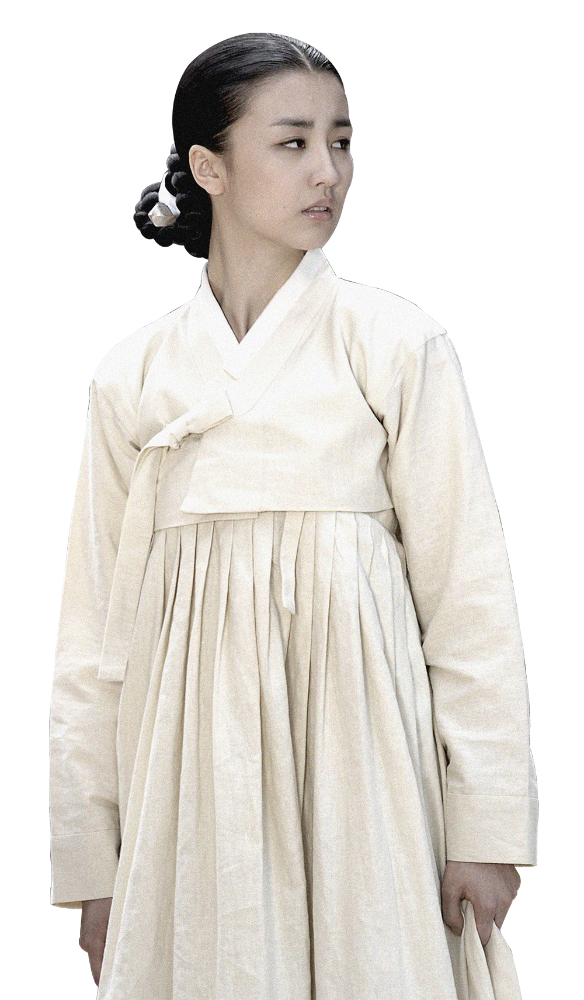

동이
장나라-천애지아

2010년 MBC 60부작 드라마로
조선시대 왕, 영조의 생모이자
숙종의 후궁인 숙빈 최씨의 이야기
1. 숙빈 최씨가 궁에 들어온 이유?
드라마 속에서는 동이(숙빈)가 태명부의 노비 일을 하다가 감찰부의
궁인으로 승격되었지만 실제로는 궐 내 무수리 일을 하다가 숙종의
승은을 입고 임신을 하게 되어 정 1품인 ‘빈’의 자리까지 오르게 된
것이다. 또한 천민 출생이며 남편과 사별한 기혼녀였기 때문에
영조에게 아버지가 다른 형이 있다는 소문이 돌았다.
드라마-동이
2. 인원왕후와 숙빈이 라이벌이라고?
인원왕후가 궁에 들어오고 동이(숙빈)과 대립 구도를 펼치다가
극적으로 화해하고 친선 관계로 나아가는 내용은 사실상 존재할 수가
없는 내용이다. 두 여인 다 노론이라는 같은 정치 기반을 지지받고
있었으며 천민 출신인 숙빈이 명문가 자제인 중전과 정치 다툼을
하는 것 자체가 가능했을 것으로 보이지 않는다.
드라마-동이
드라마-동이
3. 숙빈 최씨가 중전이 된다고?

드라마에서 숙종은 인현왕후 사후에 숙빈을 중전으로 추대할 생각이
있었지만 동이의 요청으로 후궁이 중전에 오르지 못하게 하는 법령을
선포했다. 하지만 실제 역사에서는 숙종은 숙빈을 중전에 올릴 생각도
없었으며 장희빈 사후 숙빈에 대한 견제책으로 인원왕후와 가례를
올렸으며 숙빈은 궁이 아닌 숙빈방 이현궁에서 지내게 된다.
4. 인현왕후가 남인을 모함했다고?
드라마 속에서 인현왕후는 희빈 장씨와 남인에 대해 모함을 했다는
죄목으로 간신에게 모함을 받아 폐위당했다고 나왔지만, 실제
인현왕후는 희빈장씨를 투기한 것과 아들이 없는 것, 시부모를 기만한
것 등이었지 남인과는 아무런 연관이 없었으며 남인 역시 인현왕후의
폐위를 반대했었다.